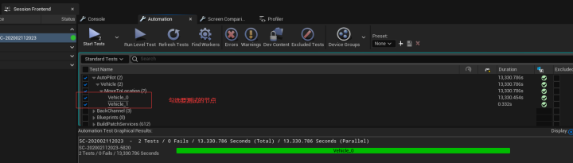
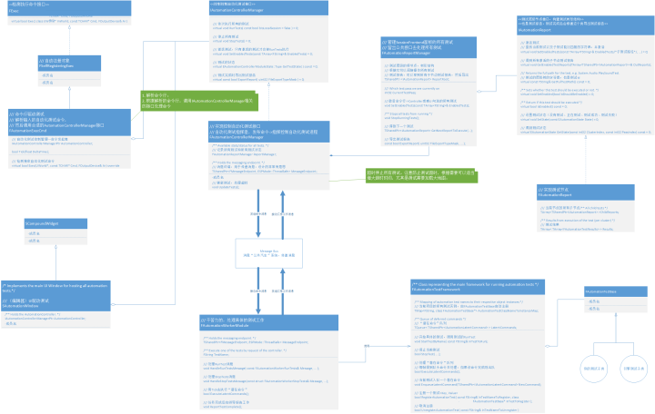
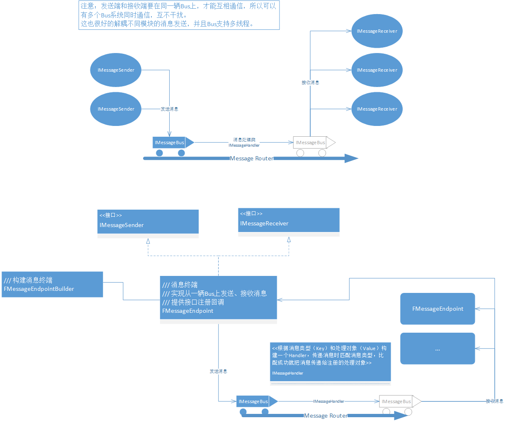

# 一、基础
- 单元测试：单元测试_百度百科
- 官方文档：自动化技术指南
# 二、UE5 简单小实验
- 根据官方文档实现的复杂测试代码
#include "Misc/AutomationTest.h" /// 复杂测试 IMPLEMENT_CUSTOM_COMPLEX_AUTOMATION_TEST(FAPTest_VehicleMoveToLocation, FAutomationTestBase, "AutoPilot.Vehicle.MoveToLocation"/*测试分类、层级、名称*/, EAutomationTestFlags::ApplicationContextMask | EAutomationTestFlags::ProductFilter); /// 这里会在编辑器中创建两个测试，并且传递不同参数给RunTest执行测试，测试代码相同。 /// 所以复杂测试适合 批量测试内容相同 而参数不同的测试，比如：测试加载所有地图、测试不同NPC对玩家造成的伤害...。 void FAPTest_VehicleMoveToLocation::GetTests(TArray<FString>& OutBeautifiedNames, TArray<FString>& OutTestCommands) const { /////////////////////////////////第一个测试/////////////////////////////////// /// 编辑器中显示的“叶子”节点名称 OutBeautifiedNames.Add(TEXT("Vehicle_0")); /// 传给RunTest的参数 OutTestCommands.Add(TEXT("Parameter_")); /////////////////////////////////第二个测试/////////////////////////////////// OutBeautifiedNames.Add(TEXT("Vehicle_1")); OutTestCommands.Add(TEXT("Parameter_1")); } /// 根据选择的测试，从OutTestCommands数组中取出对应参数执行测试。 bool FAPTest_VehicleMoveToLocation::RunTest(const FString& Parameters) { /// 返回true代表测试成功，否则测试失败 return true; } - 辑器中的可视化工具：Session Frontend
 - 命令行触发自动化测试： Automation RunTests AutoPilot.Vehicle.MoveToLocation
- 自动化测试是虚幻架构上层的实现，与平台无关！所以不论是 PS4、XboxOne、Switch 还是 Steam，只要启动游戏，传输自动化测试命令就可以运行自动化测试！
# 引擎源码解析 - 自动化测试
- 自动化测试宏
IMPLEMENT_SIMPLE_AUTOMATION_TEST (TClass, PrettyName, TFlags), 其他复杂的测试宏同理！#define IMPLEMENT_SIMPLE_AUTOMATION_TEST( TClass, PrettyName, TFlags ) \ IMPLEMENT_SIMPLE_AUTOMATION_TEST_PRIVATE(TClass, FAutomationTestBase, PrettyName, TFlags, __FILE__, __LINE__) \ namespace\ {\ /// 创建了该测试的实例 TClass TClass##AutomationTestInstance( TEXT(#TClass) );\ }- 该宏里面包裹另一个宏：IMPLEMENT_SIMPLE_AUTOMATION_TEST_PRIVATE，它会创建一个测试对象 FAutomationTestBase 的子类 TClass（宏的第一个参数）
//#define IMPLEMENT_SIMPLE_AUTOMATION_TEST_PRIVATE( TClass, TBaseClass, PrettyName, TFlags, FileName, LineNumber ) \ class TClass : public TBaseClass \ { \ public: \ /// ... 省略 protected: \ /// 得到测试名称和测试参数 virtual void GetTests(TArray<FString>& OutBeautifiedNames, TArray <FString>& OutTestCommands) const override \ { \ OutBeautifiedNames.Add(PrettyName); \ OutTestCommands.Add(FString()); \ } \ /// 你的测试代码 virtual bool RunTest(const FString& Parameters) override; \ virtual FString GetBeautifiedTestName() const override { return PrettyName; } \ };
- 该宏里面包裹另一个宏：IMPLEMENT_SIMPLE_AUTOMATION_TEST_PRIVATE，它会创建一个测试对象 FAutomationTestBase 的子类 TClass（宏的第一个参数）
- 潜在命令
宏定义潜在命令:
DEFINE_LATENT_AUTOMATION_COMMAND/ 零个参数 /;
DEFINE_LATENT_AUTOMATION_COMMAND_ONE_PARAMETER/ 一个参数 /;
.... / 更多参数 /;使用潜在命令，让其排队等候执行：ADD_LATENT_AUTOMATION_COMMAND
潜在命令的概念
- 官方文档：在 "RunTest" 期间，系统可以对潜在命令进行排队，从而使代码的某些部分跨多个帧运行。若要创建一个潜在操作，则必须通过 "DEFINE_LATENT_AUTOMATION_COMMAND" 宏来定义它。
- 我的理解：很多测试不是单次直行就能完成，为了跨多帧执行而设计的潜在命令。如果你在 “RunTest” 的时候使用这些命令，那么他们会在 FAutomationTestFramework::LatentCommands 排队（队列：先进先出，依次执行），每帧都会取出队头命令执行，直到该命令被完成，才会执行下一个命令！（小心队列被阻塞，避免一个永远完不成的命令在队列中）。
潜在命令的使用
/// 定义只有一个参数的潜在命令 DEFINE_LATENT_AUTOMATION_COMMAND_ONE_PARAMETER(FAPTestCommand_MoveVehicle, FVector, _TargetLocation); bool FAPTestCommand_MoveVehicle::Update() { /// 移动玩家代码... if (/*到达指定位置*/) { /// 命令完成 /// LatentCommands 出队当前命令，下一帧执行下一条命令 return true; } /// 命令没完成，下一帧继续 return false; } bool FAPTest_VehicleMoveToLocation::RunTest(const FString& Parameters) { /// 使用潜在命令 ADD_LATENT_AUTOMATION_COMMAND(FAPTestCommand_MoveVehicle(FVector(0.f, 0.f, 0.f))); ADD_LATENT_AUTOMATION_COMMAND(/*其他命令*/); return true; }潜在命令源码
/// 定义 #define DEFINE_LATENT_AUTOMATION_COMMAND_ONE_PARAMETER(CommandName,ParamType,ParamName) \ /// 申明了一个潜在命令类，实现接口IAutomationLatentCommand class CommandName : public IAutomationLatentCommand \ { \ public: \ CommandName(ParamType InputParam) \ : ParamName(InputParam) \ {} \ virtual ~CommandName() \ {} \ /// 跨多帧执行命令 virtual bool Update() override; \ private: \ /// 参数会申明为成员变量 ParamType ParamName; \ } //macro to simply the syntax for enqueueing a latent command /// 这里就是入队FAutomationTestFramework::LatentCommands， /// 然后每帧在ExecuteLatentCommands函数中，取队头执行 #define ADD_LATENT_AUTOMATION_COMMAND(ClassDeclaration) FAutomationTestFramework::Get().EnqueueLatentCommand(MakeShareable(new ClassDeclaration));
# 四、架构设计类图
- AutomationTest Framework
 - MessageBus
